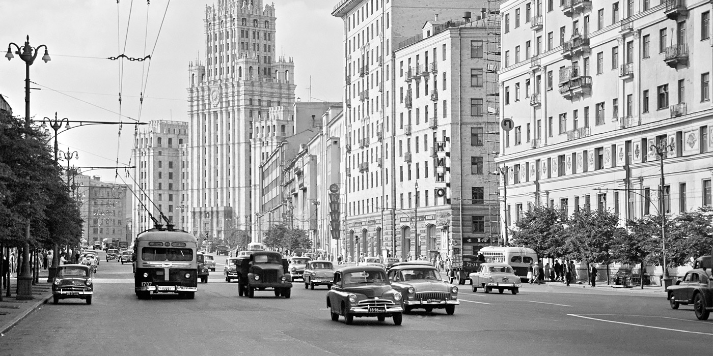
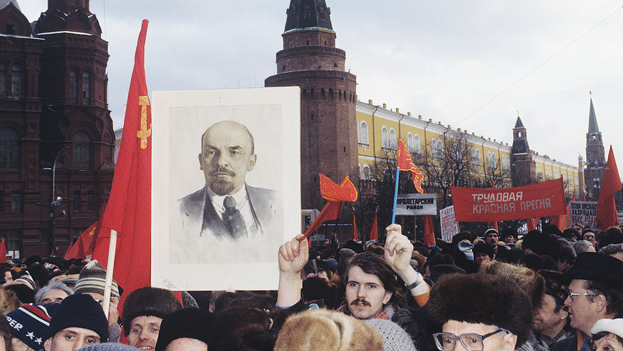
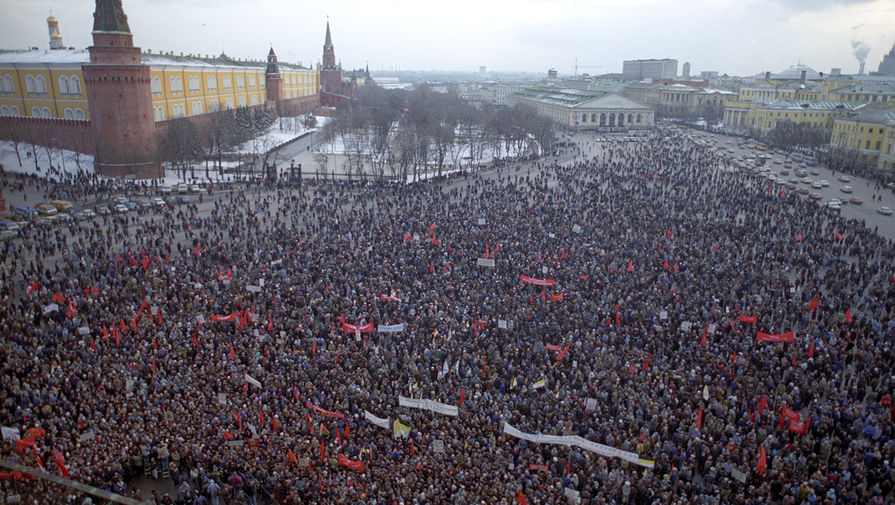
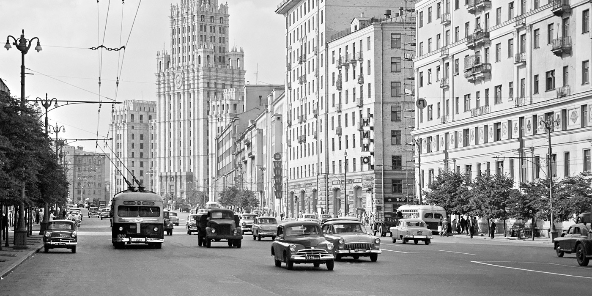
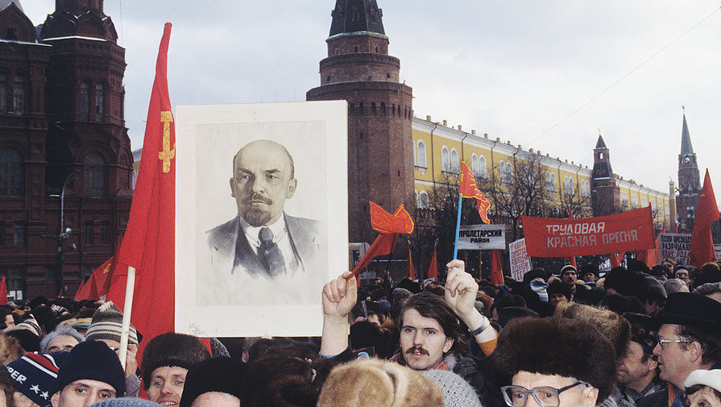
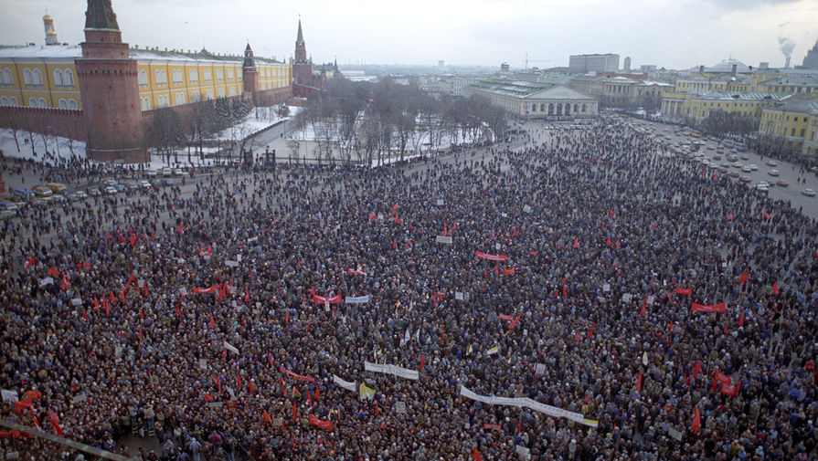

СССР

Тип:
Държава
Време:
1922-1991
СССР
Съюз на Съветските Социалистически Републики, съкратено СССР, Съветски съюз, Съюз на ССР-държава в Евразия, съществувала от 1922 г.до 1991 г. На СССР в момента на разпадането на заема почти 1⁄6 част населена суша на Земята с население от 294 милиона души, а също 2-ро място в света по ниво на промишленото производство — от 16.5 % от световния обем и 7-мо място в света по ниво на национален доход (3,4 %). СССР е създаден на територията, която до 1917 г.е заета от Руската империя без Финландия, част от полското царство и някои други територии.Отидете на раздела "# география на СССР " съветската власт на тази територия е създадена в резултат на Октомврийската революция от 1917 г.и последвалата гражданска война, резултатът от която е консолидацията на четирите републики — РСФСР, Украинската ССР, Беларуската ССР и Задкавказката СФСР. На 30 декември 1922 г.Те се обединяват в една държава — съюз на ССР — с единни власти със столица Москва, с запазване на де юре зад всяка съюзна република правото на свободно излизане от Съюза.Отидете на секцията "# История на СССР " на 22 юни 1941 г.Германия, подкрепена от съюзници, атакува СССР. Започва Великата отечествена война, след победата в която СССР става, заедно със САЩ, суперсила. Съветският съюз доминира в световната система на социализма и също така е съосновател на ООН, постоянен член на Съвета за сигурност на ООН с правото да премине към раздела "СССР във Втората световна война (1941-1945)". Съгласно Конституцията от 1977 г.СССР е провъзгласен за единна съюзна многонационална социалистическа държава, за да премине към раздел "#политическа система и идеология". Съюзническите републики се считат за суверенни държави. Процедурата за излизане на републиките от Съюза от 1990 г.регламентира специален закон. Съюзната република имаше право да влиза в отношения с чужди държави, да сключва договори с тях и да обменя дипломатически и консулски представители, да участва в дейността на международни организации. Сред 50-те страни-основатели на ООН, заедно със СССР, бяха и двете му съюзни републики: BSR и Ussrперети към раздела "#Административно-териториално разделение на СССР". Поради ниската ефективност на икономическата система, силно зависими от цените на енергията, значителни разходи, в надпревара във въоръжаването, масов дефицит на стоки, етнически противоречия и други проблеми през втората половина на 1980-те години в СССР е настъпила икономическа и политическа криза. Вътрешната политическа конфронтация ескалира. Опитите за реформиране на съветската система (демократизация, преход към пазарна икономика и многопартийност) не помогнаха за решаването на натрупаните противоречия. През 1988-1991 г.имаше редица законодателни конфликти между съюзния център и съюзните републикаприемане на раздела "Перестройка (1985-1991)". Последиците от всички тези събития доведоха до разпадането на СССР (вижте причините за разпадането). На 17 март 1991 г.се проведе референдум за запазване на СССР, на който 77,85% от гражданите на съветските републики, участвали в референдума, се изказаха за запазването на Съюза като обновена федерация на равноправните социалистически суверенни републики. Опитът за преврат на ГКЧП през август 1991 г.предизвика масови народни демонстрации в СССР в защита на демократичния курс на перестройката и законно избраната през 1989 г. държавна власт — депутатите на Конгреса на депутатите на СССР. Епицентърът на противопоставянето на путчистите се счита за събитията в Белия дом в Москва. В резултат на това опитът за завземане на властта на ГКЧП се провали. На 8 декември 1991 г.трите държави-основатели на Съюза подписаха споразумения за прекратяване на съществуването на СССР и създаването на ОНД. На 26 декември 1991 г. Съветът на републиките на Върховния съвет на СССР прие декларация за прекратяване на съществуването на СССР. Руската Федерация е призната де факто за държава-наследник на СССР в международно-правните отношения и заема мястото си в Съвета за сигурност на ООН.Отидете на раздел "#разпадането на Съветския съюз (1990-1991) " в същото време, в съответствие с действащото законодателство на Украйна, последният е наследник на правата и задълженията на УССР и международните договори на СССР. Между държавите има неразкрит въпрос за държавния дълг на СССР.
 





Източници:
wikipedia.org;